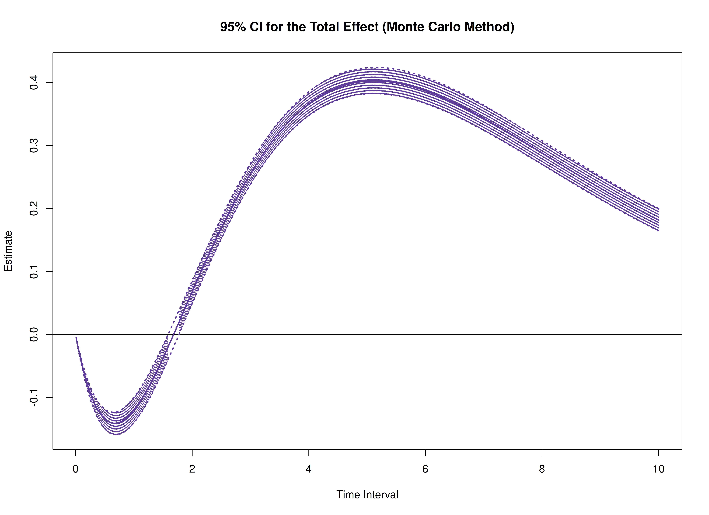

Standardized Total, Direct, and Indirect Effects in Continuous-Time Mediation Model
Ivan Jacob Agaloos Pesigan
2025-02-24
Source:vignettes/med-std.Rmd
med-std.RmdThe cTMed package offers tools for estimating and
quantifying uncertainty in standardized total, direct, and indirect
effects within continuous-time mediation models across various time
intervals using the delta and Monte Carlo methods. To implement these
approaches, estimates from a continuous-time vector autoregressive
(CT-VAR) model are required, particularly the drift matrix, and process
noise covariance matrix with the corresponding sampling
variance-covariance matrix. For guidance on fitting CT-VAR models using
the dynr or OpenMx packages, refer to Fit
the Continuous-Time Vector Autoregressive Model Using the dynr
Package and Fit
the Continuous-Time Vector Autoregressive Model Using the OpenMx
Package, respectively.
summary(fit)
#> Coefficients:
#> Estimate Std. Error t value ci.lower ci.upper Pr(>|t|)
#> phi_1_1 -0.351837 0.040477 -8.692 -0.431170 -0.272503 <2e-16 ***
#> phi_2_1 0.744281 0.022684 32.810 0.699821 0.788741 <2e-16 ***
#> phi_3_1 -0.458683 0.023307 -19.680 -0.504364 -0.413001 <2e-16 ***
#> phi_1_2 0.017299 0.035160 0.492 -0.051614 0.086211 0.3114
#> phi_2_2 -0.488816 0.019999 -24.442 -0.528013 -0.449619 <2e-16 ***
#> phi_3_2 0.726799 0.020673 35.157 0.686280 0.767318 <2e-16 ***
#> phi_1_3 -0.023825 0.026208 -0.909 -0.075191 0.027542 0.1817
#> phi_2_3 -0.009800 0.015134 -0.648 -0.039463 0.019863 0.2586
#> phi_3_3 -0.688346 0.015868 -43.379 -0.719448 -0.657245 <2e-16 ***
#> sigma_1_1 0.242175 0.007291 33.216 0.227885 0.256465 <2e-16 ***
#> sigma_2_1 0.023273 0.002647 8.792 0.018084 0.028461 <2e-16 ***
#> sigma_3_1 -0.050572 0.002740 -18.459 -0.055941 -0.045202 <2e-16 ***
#> sigma_2_2 0.070721 0.001916 36.921 0.066967 0.074476 <2e-16 ***
#> sigma_3_2 0.014990 0.001380 10.865 0.012286 0.017695 <2e-16 ***
#> sigma_3_3 0.072377 0.002106 34.361 0.068249 0.076505 <2e-16 ***
#> theta_1_1 0.198862 0.001189 167.270 0.196532 0.201192 <2e-16 ***
#> theta_2_2 0.199520 0.001001 199.355 0.197558 0.201481 <2e-16 ***
#> theta_3_3 0.201171 0.001017 197.798 0.199178 0.203165 <2e-16 ***
#> mu0_1_1 0.006365 0.118695 0.054 -0.226274 0.239004 0.4786
#> mu0_2_1 -0.042579 0.113165 -0.376 -0.264378 0.179220 0.3534
#> mu0_3_1 0.130157 0.102344 1.272 -0.070434 0.330747 0.1017
#> sigma0_1_1 1.150287 0.205378 5.601 0.747754 1.552820 <2e-16 ***
#> sigma0_2_1 0.413683 0.134865 3.067 0.149352 0.678015 0.0011 **
#> sigma0_3_1 0.225909 0.118800 1.902 -0.006935 0.458753 0.0286 *
#> sigma0_2_2 1.221862 0.198459 6.157 0.832890 1.610835 <2e-16 ***
#> sigma0_3_2 0.235429 0.125869 1.870 -0.011271 0.482128 0.0307 *
#> sigma0_3_3 0.962525 0.150708 6.387 0.667142 1.257908 <2e-16 ***
#> ---
#> Signif. codes: 0 '***' 0.001 '**' 0.01 '*' 0.05 '.' 0.1 ' ' 1
#>
#> -2 log-likelihood value at convergence = 429365.49
#> AIC = 429419.49
#> BIC = 429676.34
phi_varnames <- c(
"phi_1_1",
"phi_2_1",
"phi_3_1",
"phi_1_2",
"phi_2_2",
"phi_3_2",
"phi_1_3",
"phi_2_3",
"phi_3_3"
)
phi <- matrix(
data = coef(fit)[phi_varnames],
nrow = 3,
ncol = 3
)
colnames(phi) <- rownames(phi) <- c("x", "m", "y")
sigma_varnames <- c(
"sigma_1_1", "sigma_2_1", "sigma_3_1",
"sigma_2_1", "sigma_2_2", "sigma_3_2",
"sigma_3_1", "sigma_3_2", "sigma_3_3"
)
sigma <- matrix(
data = coef(fit)[sigma_varnames],
nrow = 3,
ncol = 3
)
theta_varnames <- c(
phi_varnames,
"sigma_1_1", "sigma_2_1", "sigma_3_1",
"sigma_2_2", "sigma_3_2",
"sigma_3_3"
)
vcov_theta <- vcov(fit)[theta_varnames, theta_varnames]
# Drift matrix
phi
#> x m y
#> x -0.3518368 0.01729864 -0.02382471
#> m 0.7442809 -0.48881584 -0.00979981
#> y -0.4586826 0.72679902 -0.68834647
# Process noise covariance matrix
sigma
#> [,1] [,2] [,3]
#> [1,] 0.24217468 0.02327250 -0.05057192
#> [2,] 0.02327250 0.07072140 0.01499047
#> [3,] -0.05057192 0.01499047 0.07237695
# Sampling variance-covariance matrix
vcov_theta
#> phi_1_1 phi_2_1 phi_3_1 phi_1_2 phi_2_2
#> phi_1_1 1.638395e-03 4.205720e-05 -2.365513e-04 -1.376185e-03 -4.400313e-05
#> phi_2_1 4.205720e-05 5.145749e-04 1.901381e-05 -2.143907e-05 -4.359631e-04
#> phi_3_1 -2.365513e-04 1.901381e-05 5.432299e-04 1.936645e-04 -9.386709e-06
#> phi_1_2 -1.376185e-03 -2.143907e-05 1.936645e-04 1.236241e-03 3.126359e-05
#> phi_2_2 -4.400313e-05 -4.359631e-04 -9.386709e-06 3.126359e-05 3.999593e-04
#> phi_3_2 2.074921e-04 -2.517298e-05 -4.623548e-04 -1.848726e-04 1.576373e-05
#> phi_1_3 9.257184e-04 8.251254e-06 -1.204207e-04 -8.555641e-04 -1.597444e-05
#> phi_2_3 3.762530e-05 2.928343e-04 7.109899e-07 -3.090243e-05 -2.783699e-04
#> phi_3_3 -1.487146e-04 2.380476e-05 3.133472e-04 1.369958e-04 -1.775455e-05
#> sigma_1_1 -2.442013e-04 -1.579694e-05 3.757720e-05 1.933901e-04 1.302756e-05
#> sigma_2_1 2.297497e-05 -3.896357e-05 -7.962854e-06 -2.294436e-05 2.962651e-05
#> sigma_3_1 1.863072e-05 3.619382e-06 -4.198918e-05 -1.170724e-05 -2.840243e-06
#> sigma_2_2 -3.578211e-06 1.541868e-05 2.332149e-06 3.281239e-06 -1.545537e-05
#> sigma_3_2 -1.431835e-06 1.927127e-06 8.322808e-06 1.615242e-06 1.176296e-07
#> sigma_3_3 -2.203611e-06 -1.270215e-06 4.429654e-06 1.092348e-06 8.732957e-07
#> phi_3_2 phi_1_3 phi_2_3 phi_3_3 sigma_1_1
#> phi_1_1 2.074921e-04 9.257184e-04 3.762530e-05 -1.487146e-04 -2.442013e-04
#> phi_2_1 -2.517298e-05 8.251254e-06 2.928343e-04 2.380476e-05 -1.579694e-05
#> phi_3_1 -4.623548e-04 -1.204207e-04 7.109899e-07 3.133472e-04 3.757720e-05
#> phi_1_2 -1.848726e-04 -8.555641e-04 -3.090243e-05 1.369958e-04 1.933901e-04
#> phi_2_2 1.576373e-05 -1.597444e-05 -2.783699e-04 -1.775455e-05 1.302756e-05
#> phi_3_2 4.273789e-04 1.199960e-04 -4.260080e-06 -3.007907e-04 -3.085525e-05
#> phi_1_3 1.199960e-04 6.868542e-04 2.386256e-05 -1.071758e-04 -1.210257e-04
#> phi_2_3 -4.260080e-06 2.386256e-05 2.290520e-04 8.181839e-06 -8.695992e-06
#> phi_3_3 -3.007907e-04 -1.071758e-04 8.181839e-06 2.518045e-04 2.042787e-05
#> sigma_1_1 -3.085525e-05 -1.210257e-04 -8.695992e-06 2.042787e-05 5.315788e-05
#> sigma_2_1 7.563860e-06 1.524066e-05 -1.770462e-05 -5.242933e-06 -1.473938e-06
#> sigma_3_1 3.205242e-05 1.735962e-06 1.379332e-06 -1.843388e-05 -5.848017e-06
#> sigma_2_2 -2.613218e-06 -2.319797e-06 9.763319e-06 1.906244e-06 4.039293e-07
#> sigma_3_2 -8.237631e-06 -9.189074e-07 -2.405728e-06 4.981899e-06 -2.565611e-08
#> sigma_3_3 -2.240050e-07 5.646350e-07 -1.197923e-07 -5.157492e-06 7.654383e-07
#> sigma_2_1 sigma_3_1 sigma_2_2 sigma_3_2 sigma_3_3
#> phi_1_1 2.297497e-05 1.863072e-05 -3.578211e-06 -1.431835e-06 -2.203611e-06
#> phi_2_1 -3.896357e-05 3.619382e-06 1.541868e-05 1.927127e-06 -1.270215e-06
#> phi_3_1 -7.962854e-06 -4.198918e-05 2.332149e-06 8.322808e-06 4.429654e-06
#> phi_1_2 -2.294436e-05 -1.170724e-05 3.281239e-06 1.615242e-06 1.092348e-06
#> phi_2_2 2.962651e-05 -2.840243e-06 -1.545537e-05 1.176296e-07 8.732957e-07
#> phi_3_2 7.563860e-06 3.205242e-05 -2.613218e-06 -8.237631e-06 -2.240050e-07
#> phi_1_3 1.524066e-05 1.735962e-06 -2.319797e-06 -9.189074e-07 5.646350e-07
#> phi_2_3 -1.770462e-05 1.379332e-06 9.763319e-06 -2.405728e-06 -1.197923e-07
#> phi_3_3 -5.242933e-06 -1.843388e-05 1.906244e-06 4.981899e-06 -5.157492e-06
#> sigma_1_1 -1.473938e-06 -5.848017e-06 4.039293e-07 -2.565611e-08 7.654383e-07
#> sigma_2_1 7.006599e-06 1.438703e-07 -6.227217e-07 -9.558368e-07 2.524688e-08
#> sigma_3_1 1.438703e-07 7.505554e-06 7.860849e-09 -2.941660e-07 -2.011280e-06
#> sigma_2_2 -6.227217e-07 7.860849e-09 3.669146e-06 6.984348e-08 -4.218391e-08
#> sigma_3_2 -9.558368e-07 -2.941660e-07 6.984348e-08 1.903497e-06 5.149938e-08
#> sigma_3_3 2.524688e-08 -2.011280e-06 -4.218391e-08 5.149938e-08 4.436798e-06In this example, we aim to calculate the total, direct, and indirect
effects of x on y, mediated through
m, over time intervals ranging from 0 to 10.
# time intervals
delta_t <- seq(from = 0, to = 10, length.out = 1000)Delta Method
library(cTMed)
start <- Sys.time()
delta <- DeltaMedStd(
phi = phi,
sigma = sigma,
vcov_theta = vcov_theta,
delta_t = delta_t,
from = "x",
to = "y",
med = "m",
ncores = parallel::detectCores() # use multiple cores
)
end <- Sys.time()
elapsed <- end - start
elapsed
#> Time difference of 1.48478 secs
plot(delta)

Monte Carlo Method
start <- Sys.time()
mc <- MCMedStd(
phi = phi,
sigma = sigma,
vcov_theta = vcov_theta,
delta_t = delta_t,
from = "x",
to = "y",
med = "m",
R = 20000L,
ncores = parallel::detectCores() # use multiple cores
)
end <- Sys.time()
elapsed <- end - start
elapsed
#> Time difference of 19.19607 mins
plot(mc)